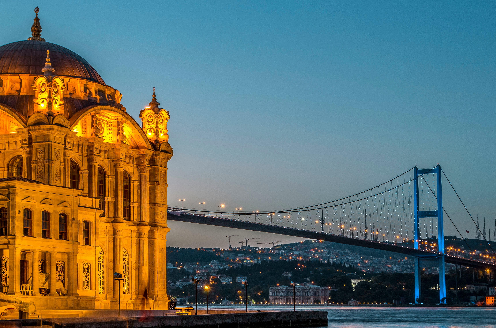

Istanbul, Turkey
Istanbul sits at the crossroads of Europe and Asia, offering a fascinating mix of cultures and architecture. The Hagia Sophia, Blue Mosque, and Grand Bazaar are must-see landmarks. Visitors can cruise along the Bosphorus, savor Turkish tea and baklava, and experience the city’s vibrant energy. Istanbul is where history meets modern life in the most colorful way.
Every street in Istanbul tells a story of empires and traditions. The aroma of spices fills the bazaars, while the call to prayer echoes across the skyline of domes and minarets. Visitors can taste flavorful dishes like kebabs and simit while watching the sunset from Galata Tower. With its rich past and lively culture, Istanbul offers an unforgettable journey between continents and centuries.
Istanbul blends East and West in a single breathtaking view. Wander through colorful bazaars, taste authentic Turkish coffee, and admire the stunning mosques. The city’s mix of history and modern life makes it an unforgettable stop for every traveler.